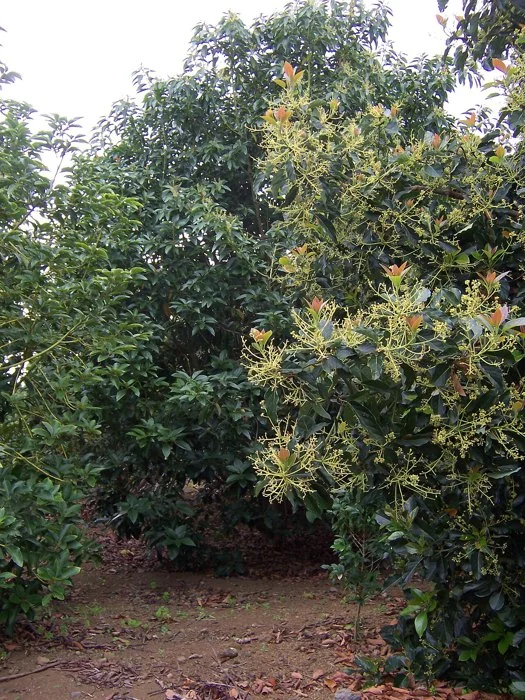
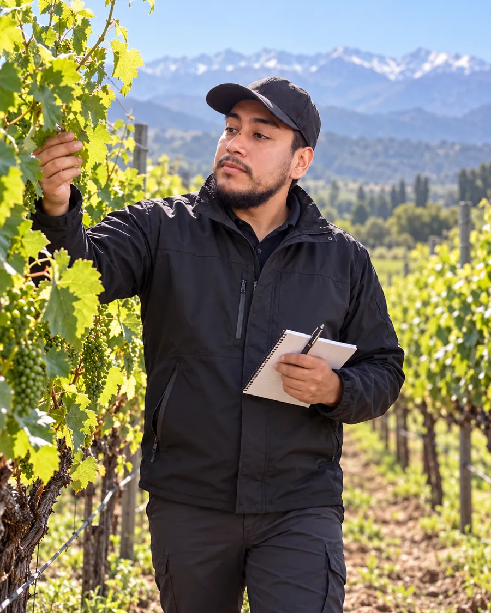

FORMACIÓN AGRÍCOLA · A TU RITMO
Cultivo y manejo técnico del palto
Aprende a evaluar, establecer y manejar un huerto de paltos, con cálculos explicados, observación de campo y referencias técnicas.

Lo que aprenderás
- Evalúa sitio, plantas y condiciones del huerto antes de intervenir.
- Resuelve cálculos de riego, uniformidad, nutrición y costos.
- Organiza un plan de manejo con registros de floración, sanidad y cosecha.
Para productores, estudiantes y personas que quieren comprender el manejo de paltos con criterios técnicos.
Preparación: operaciones básicas, porcentajes y calculadora. Puedes resolver todas las actividades con los casos simulados; no necesitas disponer de un huerto.
Programa de 12 temas
- Sitio, clima y diagnóstico del huerto
- Variedades, portainjertos y plantas de vivero
- Suelo, raíces, drenaje y salinidad
- Diseño, plantación y establecimiento
- Fenología, floración y polinización
- Programación del riego y balance de agua
- Uniformidad, humedad y revisión del sistema
- Análisis y nutrición del palto
- Copa, poda y protección de la planta
- Sanidad radicular y manejo integrado de plagas
- Madurez, cosecha y poscosecha
- Costos, indicadores y plan anual del huerto
Conoce el formato del aula
Las muestras de huerta y goteo permiten conocer el formato. El curso de paltos incluye su propio programa y materiales.
Ver muestras gratuitasCómo ingresar
- Consulta por WhatsApp el programa, monto y condiciones.
- Coordina el pago y confirma el plazo de activación con el encargado.
- Una vez confirmado, recibirás tu cuenta y acceso al curso comprado.
Certificados de CAMPO EDUCA
Completa las 12 lecciones y aprueba con al menos 21 respuestas correctas de 30 para habilitar los certificados. Son constancias privadas del curso; no equivalen a un título profesional.
Ver diseño de muestra
José Ignacio Farías
Ingeniero Agrícola · Encargado del curso
Coordina las consultas, el registro de estudiantes y la habilitación del aula.
Clases visuales para estudiar y practicar
Los 12 temas suman 480 diapositivas. Las explicaciones se distribuyen por conceptos, con fotografías, tablas editables, ejemplos de campo y cálculos paso a paso. Cada clase incluye su PDF y narración con pausas para responder.
Entrar a mi aula